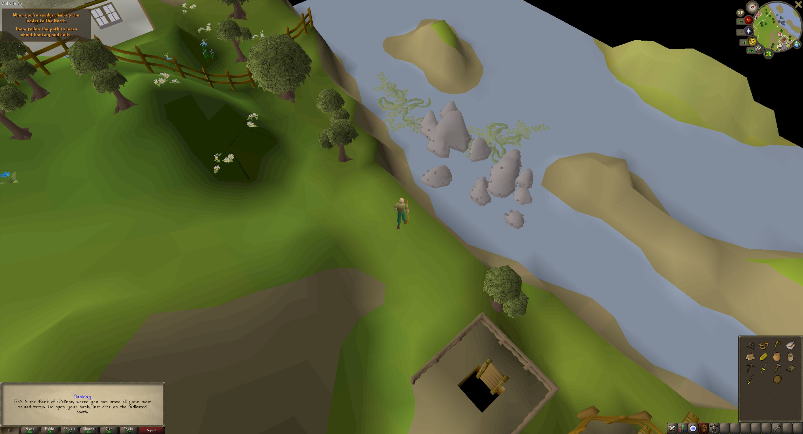

<!doctype html><html lang="en"><meta charset="utf-8"><meta name="viewport" content="width=device-width,initial-scale=1"><title>Holm · Trees and sparse vegetation</title>
<style>*{box-sizing:border-box}body{margin:0;background:#263832;color:#eee5cf;font:15px/1.5 Georgia}header{padding:16px 24px}h1{margin:0;font-size:25px}main{display:grid;grid-template-columns:minmax(0,1fr) 330px;height:calc(100vh - 95px)}#view{min-height:450px}canvas{display:block;width:100%;height:100%}aside{background:#eee5d0;color:#334036;padding:20px;overflow:auto}button{width:100%;padding:10px;margin:4px 0;background:#38584a;color:#fff3d9;border:0;font:14px Georgia;cursor:pointer}img{width:100%}a{color:#315e4b}#status{font:12px/1.5 system-ui}@media(max-width:850px){main{height:auto;grid-template-columns:1fr}#view{height:65vh}}</style>
<script type="importmap">{"imports":{"three":"https://cdn.jsdelivr.net/npm/three@0.160.0/build/three.module.js"}}</script>
<header><h1>Holm's trees & wild edges</h1><div>Original Blender assets · habitat study · under review</div></header>
<main><div id="view"></div><aside><h2>Space between the plants</h2><p>Broad oak, slender birch and windswept pine give each part of the island a different silhouette. Tufts and reeds grow in small irregular patches.</p><button data-camera="family">Whole family</button><button data-camera="oak">Village oak</button><button data-camera="birch">Creek birch & reeds</button><button data-camera="pine">Coastal pine & tufts</button><button id="pause">Pause breeze</button><p id="status" role="status">Loading Blender assets…</p><h2>Landscape reference</h2><a href="../Bible_References/Landscape_Option.jpg"></a><p>This is a family comparison, not installed island scenery. Final placement will follow ground slope, shelter and water, keeping routes open.</p><a href="studio_holm_kitchen_wings.html">Bakehouse study</a> · <a href="../docs/rebuild/holm-overhaul/index.html">Island plan</a></aside></main>
<script type="module">
import * as THREE from 'three';
import {GLTFLoader} from 'https://cdn.jsdelivr.net/npm/three@0.160.0/examples/jsm/loaders/GLTFLoader.js';
import {OrbitControls} from 'https://cdn.jsdelivr.net/npm/three@0.160.0/examples/jsm/controls/OrbitControls.js';
const host=document.querySelector('#view'),renderer=new THREE.WebGLRenderer({antialias:true});renderer.setPixelRatio(Math.min(devicePixelRatio,1.5));renderer.setClearColor('#8f9b82');renderer.outputColorSpace=THREE.SRGBColorSpace;renderer.shadowMap.enabled=true;host.append(renderer.domElement);
const scene=new THREE.Scene(),camera=new THREE.PerspectiveCamera(38,1,.1,150),controls=new OrbitControls(camera,renderer.domElement);controls.target.set(0,2,0);camera.position.set(17,15,23);controls.maxPolarAngle=Math.PI*.49;controls.minDistance=4;controls.maxDistance=45;controls.update();
scene.add(new THREE.HemisphereLight('#efe8d0','#536043',1.8));const sun=new THREE.DirectionalLight('#fff0d5',2);sun.position.set(-10,20,12);sun.castShadow=true;sun.shadow.mapSize.set(2048,2048);Object.assign(sun.shadow.camera,{left:-18,right:18,top:18,bottom:-18});scene.add(sun);
const base=new THREE.Mesh(new THREE.CircleGeometry(17,40),new THREE.MeshLambertMaterial({color:'#69794c'}));base.rotation.x=-Math.PI/2;base.position.y=-.025;base.receiveShadow=true;scene.add(base);
const placements=[['oak',-6,0,1],['birch',0,-1,1],['coastal-pine',6,0,1],['meadow-tuft',-7,2,1],['meadow-tuft',-4,1.4,.8],['meadow-tuft',7,2,1],['creek-reeds',1.8,2,1],['creek-reeds',2.7,1.4,.7]];
const mixers=[],clock=new THREE.Clock();let paused=false,total=0,loaded=0;
const loader=new GLTFLoader(),root='../.studio-workspaces/holm-tree-family-v2/candidates/';
const templates=new Map();
async function load(){for(const name of new Set(placements.map(p=>p[0])))templates.set(name,await loader.loadAsync(root+name+'.glb'));
 for(const [name,x,z,scale]of placements){const g=templates.get(name),model=g.scene.clone(true);model.position.set(x,0,z);model.scale.setScalar(scale);model.traverse(n=>{if(n.isMesh){n.castShadow=n.receiveShadow=true;total+=(n.geometry.index?n.geometry.index.count:n.geometry.attributes.position.count)/3}});scene.add(model);if(g.animations.length){const mixer=new THREE.AnimationMixer(model);g.animations.forEach(c=>mixer.clipAction(c).play());mixers.push(mixer)}loaded++}
 document.querySelector('#status').textContent=loaded+' authored instances · '+Math.round(total).toLocaleString()+' triangles · '+mixers.length+' breeze animations. Placement is for comparison only.';console.info('[HOLM_VEGETATION_STUDIO]',loaded,'instances',total,'triangles',mixers.length,'mixers');render();}
function render(){const dt=Math.min(clock.getDelta(),.1);if(!paused)mixers.forEach(m=>m.update(dt));renderer.render(scene,camera)}
controls.addEventListener('change',()=>{if(paused)renderer.render(scene,camera)});
document.querySelectorAll('[data-camera]').forEach(b=>b.onclick=()=>{const key=b.dataset.camera,x={oak:-6,birch:0,pine:6}[key];if(key==='family'){controls.target.set(0,2,0);camera.position.set(17,15,23)}else{controls.target.set(x,2,0);camera.position.set(x+7,7,10)}controls.update();render()});
document.querySelector('#pause').onclick=()=>{paused=!paused;clock.getDelta();renderer.setAnimationLoop(paused?null:render);document.querySelector('#pause').textContent=paused?'Resume breeze':'Pause breeze';render()};
new ResizeObserver(()=>{const r=host.getBoundingClientRect();renderer.setSize(r.width,r.height,false);camera.aspect=r.width/r.height;camera.updateProjectionMatrix();render()}).observe(host);renderer.setAnimationLoop(render);load().catch(e=>{document.querySelector('#status').textContent='Asset loading failed.';console.error(e)});
</script></html>